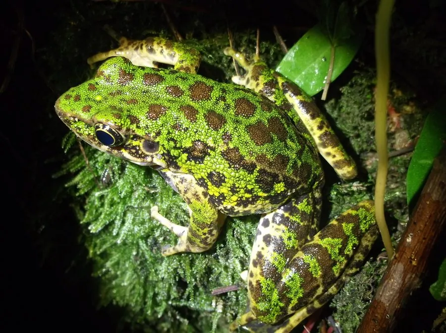

两栖动物 · 动物界
花臭蛙 Odorrana schmackeri

中国南方山溪中的臭蛙，背部绿色并布满深色花斑，受惊时皮肤分泌难闻黏液，跳跃能力强，常贴在湿石上。
- 分类
- 门脊索动物门纲两栖纲目无尾目科蛙科属臭蛙属
- 栖息环境
- 山地清凉溪流、瀑布旁和潮湿岩壁
- 地理分布
- 中国南方山地溪流
- 保护级别
- IUCN 无危（LC）；中国“三有”保护动物
物种志
花臭蛙体长 6–8 厘米，雌蛙略大。头部扁平，吻端钝圆，鼓膜明显；体背呈鲜绿色或黄绿色，散布深褐色、黑褐色斑点，四肢有横纹，趾端有吸盘，后肢长而有力，善于在湿滑的岩石上跳跃。
它分布于中国南方山地，栖息于清凉的溪流、瀑布旁和潮湿的岩壁上，白天常贴在湿石上或藏在石缝中，夜间捕食昆虫、蜘蛛和小型无脊椎动物。受惊时，它的皮肤腺体会分泌带有刺激性气味的黏液，因此得名“臭蛙”，这种分泌物能让捕食者不适。繁殖期在 4–7 月，雄蛙在溪流石缝中鸣叫，雌蛙把卵产在溪流石下，蝌蚪吸附在石面上，以适应急流。花臭蛙是溪流生态系统的指示物种，中国将其列入“三有”名录。
形态与习性
- 食性昆虫、蜘蛛和小型无脊椎动物
- 体长约 6–8 cm
- 防御受惊时皮肤分泌难闻黏液
- 繁殖4–7 月产卵于溪流石下
- 活动节律夜行性，白天贴在湿石上
- 栖息清凉溪流、瀑布旁和潮湿岩壁
趣味知识
- 花臭蛙受惊时皮肤会分泌难闻的黏液，“臭蛙”之名由此而来。
- 它的趾端有吸盘，能牢牢吸附在湿滑的岩石上。
- 花臭蛙是山溪水质良好的指示物种，离开清洁溪流很难生存。